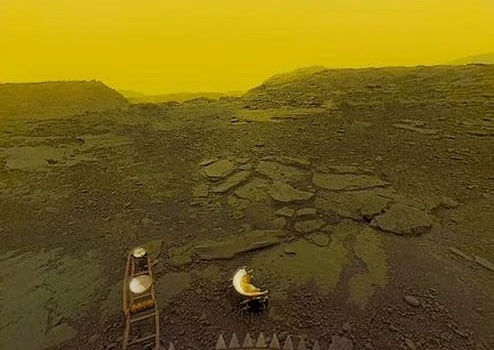

Venus might be Earth's sister planet in size, but when it comes to habitability and climate, it couldn't be more different. With crushing pressures, 900°F surface temperatures, and acid clouds, Venus seems like a real-life hell. These traits might not be attractive to the everyday tourist, but scientists are eager to learn more about this mysterious planet. Getting to Venus, however, is no walk in the park; on the day this blog was posted, it was 125.98 million miles away, while the Moon was only 238,900 miles away.
The drive to reach Venus was high, but so were the tensions. During the Space Race, the United States and the Soviet Union were trying to one-up each other wherever they could, and Venus was no exception. The main goal was to land a spacecraft on the Venusian surface and keep it there. That dream never came to fruition, but one attempt got closer than all the others.
Venera 13 was part of the broader Soviet Venera program, which aimed to study Venus's climate and geology. It was an engineering marvel: it had a shock-absorbing sphere designed to withstand around 90 atmospheres of pressure, an advanced thermal-protection system able to tolerate about 870°F, and multiple instruments to study the planet's terrain. All of this only lasted 127 minutes after landing—which, in retrospect, might seem like a waste of energy—but it endured four times longer than intended.
Despite its short lifespan, Venera 13 was our eye on Venus. It captured the first-ever color photos of the Venusian surface. Seeing these photos rocked me to my core because research has shown that Venus is a real-life hell, and the images we got back do that claim justice. The photos depict the planet as a barren wasteland with acidic yellow skies. Below, you can see one of the pictures it sent back:
The images and data Venera 13 collected are invaluable. We haven't been on the surface of Venus for decades. As a result, the data that Venera 13 brought back is what scientists have been using to study this mysterious planet since 1982. The 127 minutes this lander lasted acted as our eye peering through the acid clouds that hide the planet's true colors. After that time was up, our eye melted, and its remnants are still there nearly half a century later. Today, all that remains is our blind eye on Venus.